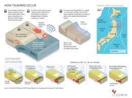

Tsunamis are a series of large waves that strike coastal areas. They can happen with little warning and result in flooding and damage to coastal communities.A tsunami's trough, the low point beneath the wave's crest, often reaches shore first. When it does, it produces a vacuum effect that sucks coastal water seaward and exposes harbor and sea floors.A tsunami or tidal wave is a series of waves in a water body caused by the displacement of a large volume of water, generally in an ocean or a large lake.
A tsunami is a series of large waves generated by an abrupt movement on the ocean floor that can result from an earthquake, an underwater landslide, a volcanic eruption or - very rarely - a large meteorite strike. However, powerful undersea earthquakes are responsible for most tsunamis.
Tsunamis occur most often in the Pacific Ocean and Indonesia because the Pacific Rim bordering the Ocean has a large number of active submarine earthquake zones. However, tsunamis have also occurred recently in the Mediterranean Sea region and are expected in the Caribbean Sea as well.
Tsunamis can actually occur anywhere, but there are areas of the world where they are more likely to happen. Most Tsunamis occur around the Pacific Ocean due to high seismic activity. Japan, for example, is so prone to Tsunamis, that they even practice 'Tsunami Drills'. On March 28, 1964, twelve people were killed in California when a tsunami was generated by a magnitude 9.2 earthquake off the coast of Alaska. A surge approximately 20-feet high flooded 29 city blocks of Crescent City.Scientists estimate that almost three quarter of the world tsunamis occur in the Pacific Ocean, where the megathrusts (subduction zones) are so common (Aleutian Islands, Alaska, Chile, Philippines, Japan etc).
A tsunami is a series of waves generated in an ocean or other body of water by a disturbance such as an earthquake, landslide, volcanic eruption, or meteorite impact. Undersea landslides, which can be caused by large earthquakes, can also cause tsunami waves to form as water attempts to find a stable position.Tsunami are actually waves caused by sudden movement of the ocean due to earthquakes, landslides on the sea floor, land slumping into the ocean, major volcanic eruptions or large meteorite impacts.